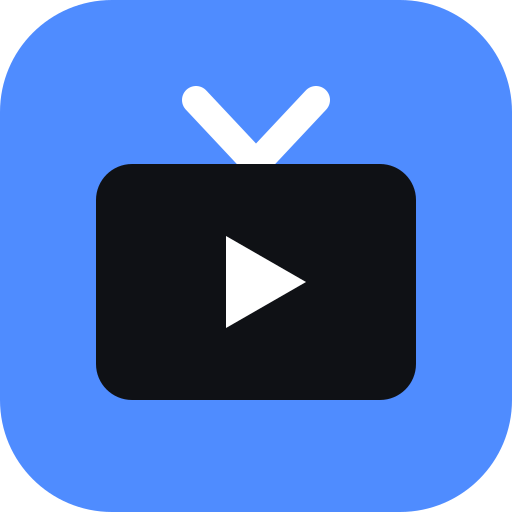

No channel selected
Keys: ↑/↓ switch channel · type a number to jump · F fullscreen · M mute · / search
Swipe left/right on the video to switch channels.

Free TVKeys: ↑/↓ switch channel · type a number to jump · F fullscreen · M mute · / search
Swipe left/right on the video to switch channels.